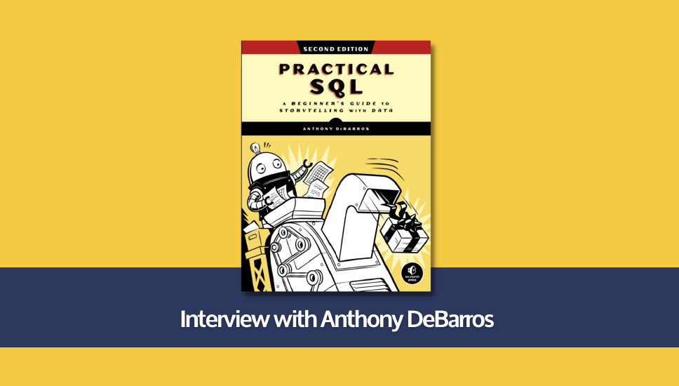

“SQL的现在与未来”——对话《SQL实战》作者安东尼·德巴罗斯¶
Note
本文由黄健宏翻译自LearnSQL网站，原作者为雅各布·罗曼诺夫斯基和安东尼·德巴罗斯，标题为译者所作，译文部分内容有删改。
有的人制作船模，有的人收集邮票，而我则阅读SQL书。
我虽然读过很多书，但真正称得上好书的并不多，有些好书甚至进入了我自选的“最佳SQL图书名单”。最近的一个好消息是，名单里的其中一本刚刚发布了它的最新版本。这本书非常棒，甚至比它的上一版还要好！更妙的是，我甚至还得到了一次与该书作者安东尼·德巴罗斯对话的机会。
事不宜迟，下面就来看看我们都聊了些什么。
关于《SQL实战》¶
LearnSQL：今天我们要采访的是安东尼·德巴罗斯，他是出色的《SQL实战》一书的作者。感谢您接受我们的采访。恭喜您的新书第二版即将发行，这本书都包含了什么内容？
安东尼·德巴罗斯：谢谢您的关心，《SQL实战》的主要内容是关于如何从最基础的表格查询等知识开始学习SQL。但是在学习的过程中，我也分享了很多关于数据分析的见解——这些都是我在职业生涯中学到的注意事项：比如检查数据的准确性和完整性。因为我希望这本书能够贴近现实生活，所以我也在书本的示例里面使用了几个实际的数据集。
在第二版里面，我几乎为每一章都添加了新的内容：比如新技术，更多的示例，更多的语法和函数，还有更多的数据集。我还花了更多时间帮助读者搭建自己的编程环境，这对于编程新手特别有帮助。Crunchy Data的斯蒂芬·弗罗斯特给了我很大的帮助和指导，他是这一版的技术审核员。他给我带来了很多有用且实用的见解，帮助我避免了一些愚蠢的错误。
LearnSQL：哪些人适合阅读这本书？
安东尼·德巴罗斯：《实战SQL》非常适合那些从来未接触过编程的入门新手，书本可以帮助他们快速掌握SQL这门语言。
不过，书中同样也涵盖了一些内容，比如GIS、使用JSON存储和查询数据以及全文检索等，这些都是比较高级的主题。我还想说，对于需要提高后端数据技能的前端开发者以及数据科学家来说，这都是一本非常好的书。
在创作本书的时候，我也会经常想到那些需要使用电子表格处理数据的人。虽然电子表格可以完成很多工作，但它还是不够强大，无法胜任处理大数据集等任务，这时候他们就会需要用到SQL。
如何让学习SQL变得有趣¶
LearnSQL：大多数SQL书籍都非常枯燥乏味，它们就像另一种形式的数据库文档，里面包含的都是不切实际的例子。但是您的书却让学习SQL语法变得有趣起来，您是怎么做到这一点的，秘诀是什么？
安东尼·德巴罗斯：很高兴听到您这么说！我是站在课堂教师的角度进行创作的，我一直在考虑怎样才能让一群学生在一整个学期里的每堂课都乐在其中。对我来说，答案就是让这本书关注现实生活中的数据分析：其中既有发现带来的喜悦，也有杂乱数据带来的痛苦。因此，我使用真实数据，努力帮助读者在学习的同时发现对数据的见解。与此同时我也相信大家会了解到，其实数据的质量有时候会有所欠缺。我们会了解这一点，并做出相应的应对措施。这是非常现实的问题。
LearnSQL：您在每一章的结尾都会留给读者一个需要完成的小项目，您认为互动式SQL课程能够很好地补充您的书吗？
安东尼·德巴罗斯：我非常喜欢从多个角度进行学习，从而找到自己喜欢的最佳学习方式，所以互动式的学习也是有可能的。我想过根据自己的书开发相应的课程，但目前还没有任何具体的计划。
SQL为何适用于数据分析？¶
LearnSQL：跟LearnSQL.com博客上的其他作者一样，我们长期以来一直试图说服我们的读者，数据分析并不仅仅是Excel电子表格那么简单。你又是用什么理由说服人们使用SQL的呢？
安东尼·德巴罗斯：我觉得电子表格虽然很好，但是任何长期处理数据的人都会很快发现电子表格有很大的局限性，其中之一就是很容易在不知不觉中在数据里面制造错误。举个例子，如果你双击一个CSV文件并用Excel打开，电子表格会自动认为像04401这样的美国邮政编码是一个数字，并去掉前导的零；又或者，它可能会尝试把3-2这样的产品代码转换为日期。这种情况非常常见，这也是我在书中涉及的主题之一——如何清理这些混乱。
通过SQL，你可以根据规则规范数据：比如数字列里面不能包含文本，日期必须以指定的方式格式化，诸如此类。SQL让你能够减少数据的不一致性。
此外，电子表格自身也有一些限制，比如你无法在Excel里面处理2亿行的数据集。如果要将这么多数据同时加载到数据框里面，即使是R和Python也会相当吃力。但SQL数据库却非常适合处理这类场景，因为它是专为处理大型数据集而构建的，其运行速度非常快，尤其是在添加了索引的情况下。
然后是SQL数据库的关系方面：为表创建关系可以减少冗余，使数据管理变得更容易。我在书中对此做了大量介绍——不仅包括如何实现表之间的关系，还介绍了构建关系数据带来的具体优势。
SQL和电子表格的话题还有很多可以说道，但上述这些是一个非常好的开始。
为何选择PostgreSQL？¶
LearnSQL：您在书中选择了使用PostgreSQL而不是其他SQL数据库，原因是什么？
安东尼·德巴罗斯：首先，我不希望读者为软件付费，或者在使用付费产品的免费版本时遇到限制。这样一来，免费的开源SQL数据库就剩下几种选择了——主要是MySQL、SQLite和PostgreSQL。
这几种数据库都非常棒，各自都拥有强大的用户社区。我用过其中的每一种，但多年来我最喜欢的还是PostgreSQL。这要从大约10年前开始说起，当时我正在学习如何使用Django构建网站，而PostgreSQL与该框架集成得非常好。我也非常喜欢开源的PostgreSQL图形用户界面pgAdmin。
不过，如果非要说出PostgreSQL成为我首选的一件事，就是PostGIS空间数据插件：它是一个非常强大且有用的工具，能够和QGIS以及其他GIS工具很好地集成。此外，Python也对PostgreSQL提供了非常完善的支持。
数据分析对社会及商业的影响¶
LearnSQL：人们经常谈论数据驱动和数据民主化，这些词最近变得非常流行，数据有那么重要吗？
安东尼·德巴罗斯：我认为就理解任何主题而言，数据与创造力、直觉、学习和良好的常识同样重要。
要想真正地了解周围的世界，或理解经济学、人口学或一系列主题，就必须掌握数据。听到人们在谈论什么以及他们说自己的感受是一回事，这很重要，但同样重要的是要测量活动并量化实际发生的事情，了解人们实际做了什么，或者系统在测量基准上的实际表现。理解数据、从数据中获取答案的能力非常重要。
LearnSQL：SQL能够如何帮助人们发展业务？
安东尼·德巴罗斯：与我之前所说的类似，SQL是一种帮助企业以连贯高效的方式管理数据的工具。它还能帮助企业深入了解其业务活动，而这些活动可能在表面上并不明显。
LearnSQL：您为《华尔街日报》工作，撰写有关经济、贸易、人口统计和Covid-19传染病等文章，您在撰写文章时会用到数据分析吗？
安东尼·德巴罗斯：是的，我是一名数据编辑，所以在撰写文章的时候当然会用到数据分析！您可以在我的《华尔街日报》页面上看到我撰写的报道，里面有不少数据分析叙事的例子。
数据的魅力¶
LearnSQL：我也在报社和电视台做了很多年的记者。数据到底有何魔力，为什么如此吸引我们这样的人呢？
安东尼·德巴罗斯：我想可能是因为没有任何两个数据集是完全相同的，总有一些新的东西值得去学习，当你执行查询的时候，总有一些见解会让您感到惊奇。
我的观点是，数据永远不会枯燥乏味，这跟某些人的想法恰恰相反。说到底，数据其实跟人以及人的行为方式有关，而人是非常有趣的。
LearnSQL：您在书中使用了“interviewing data”一词，你是否认为数据库是一个个体，并且它具有有趣的故事可讲？
安东尼·德巴罗斯：是的，这种说法完全正确。数据有一个多层次的故事，就好像一本引人入胜的小说。每个故事都有相应的起源——数据从何而来？是谁收集的？还有数据要讲述的故事：它揭示了哪些趋势？
然后，就像小说中大多数吸引人的角色一样，数据可能会有一些缺陷或局限性。了解这些很重要，这样我们才能知道如何使用数据。因此，我们必须从多个角度观察数据，并提出问题来深入了解数据，就像了解我们的邻居一样。
SQL的未来¶
LearnSQL：SQL和数据库的未来是什么？
安东尼·德巴罗斯：这方面我也没法说太清楚，但我想说的是，SQL已经存在了40多年，并且很可能还会继续存在一段时间。10年前，我听到很多人说NoSQL会让SQL过时，但这并没有发生。然后，我又听到有人说R和Python/Pandas会让SQL过时，这同样也没有发生。PostgreSQL等产品现在已经发展到可以跟NoSQL产品同台竞技了，而许多R和Pandas用户也发现将SQL数据库集成到工作流程里面是相当有益的。
因此，我认为可以肯定地说，SQL在未来一段时间内仍然是一项非常宝贵的技能。我不知道SQL语言本身是否会发生巨大的变化，但我可以想象，开发SQL数据库的工程师会继续寻找优化性能的方法，从而处理我们这个以数据为中心的世界所产生的越来越大的数据集。
LearnSQL：您最近读了哪些书，可以推荐一些SQL或其他领域的书吗？
安东尼·德巴罗斯：我刚刚购买了Regina O. Obe和Leo S. Hsu合著的《PostGIS in Action》。到目前为止，我非常喜欢这本书。由No Starch出版Christian Mayer创作的《Python One-Liners》也已经在我的书架上恭候多时了。此外我还打算购买Renee M. P. Teate创作的《SQL for Data Scientists》。
LearnSQL：非常感谢您接受我的采访。
安东尼·德巴罗斯：这次采访很有趣，感谢您的邀请！